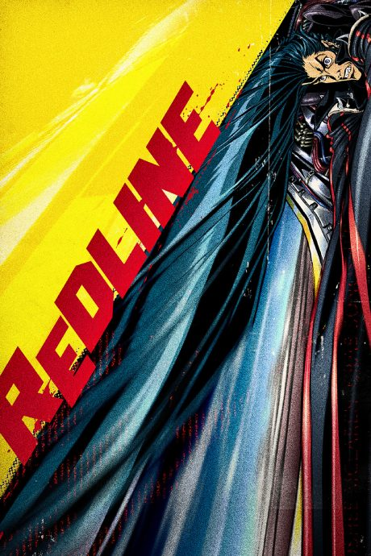
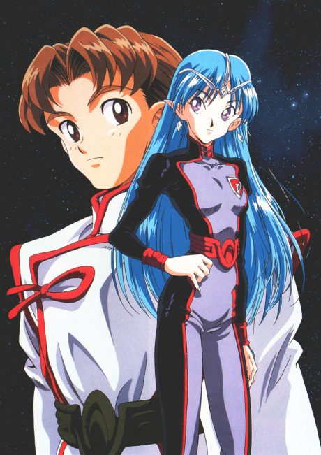
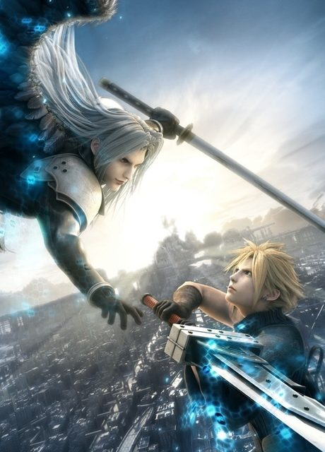
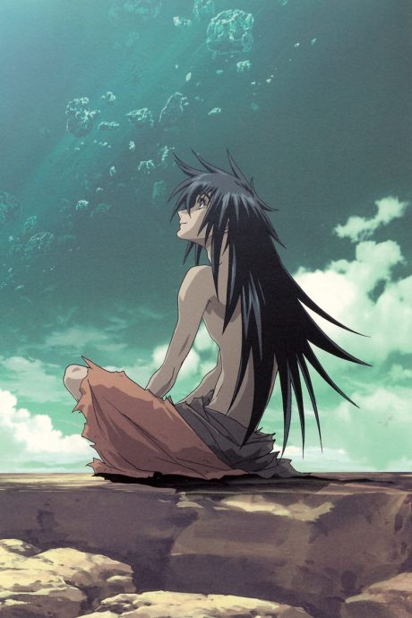
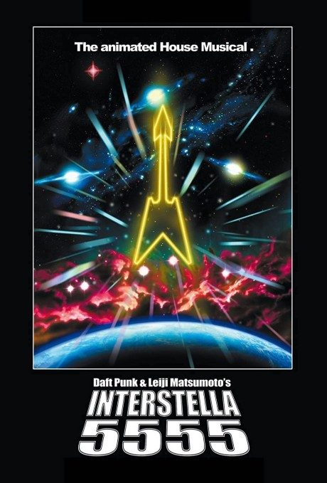
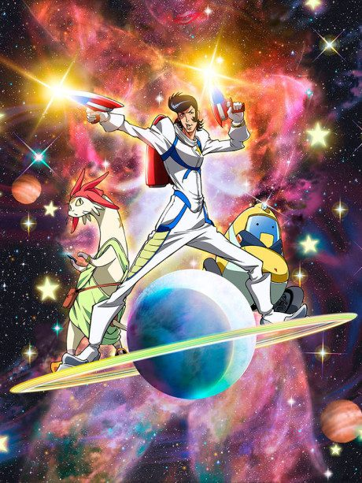
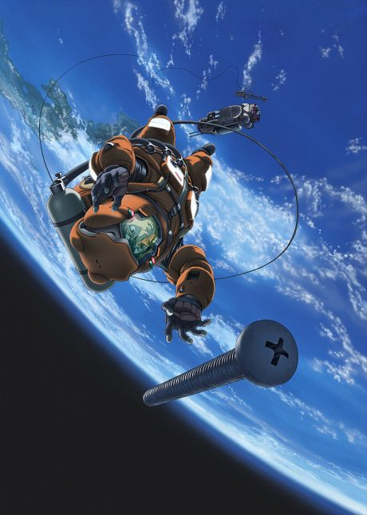
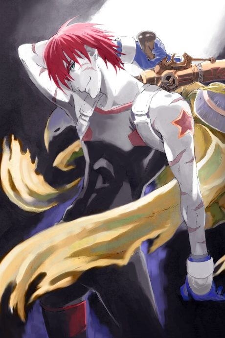

Redline
REDLINE
JP, a daredevil driver, races in the most dangerous race in the galaxy, held on a hostile planet.
An original anime, so there's no book to continue with.
8.1AniList score
—Animeter, no votes yet
1film
Rate it or report where you stopped
Is it worth watching?
The drop map is for series. Rate the film above to add to its Animeter score.
More like Redline

Original7.3
Original8.0
Star Blazers: Space Battleship Yamato 2199
Film7.4 Unclear8.3
Unclear8.3

Original7.1
Film7.7
Original8.1
PSYCHO-PASS
Original7.7 VN8.9
VN8.9
 VN7.7
VN7.7

Manga Ch. 158.0
Unclear7.5